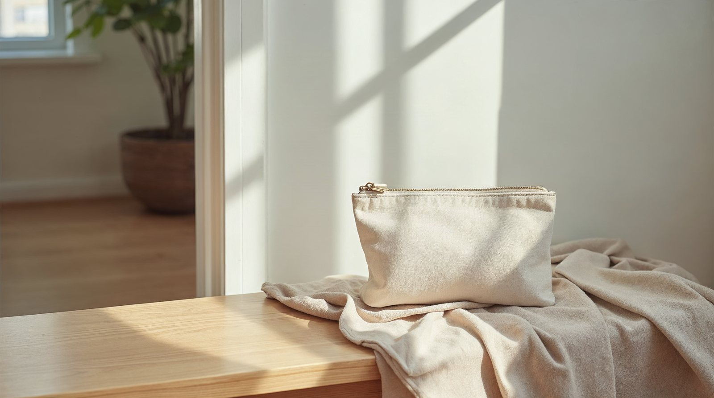
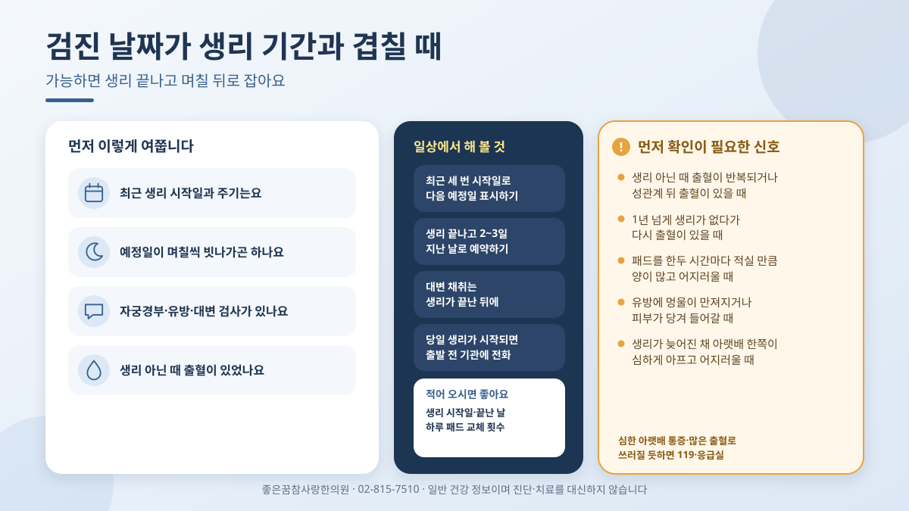

이종호 한의사 감수좋은꿈참사랑한의원 대표원장 (한의사 면허번호 19769)발행 2026-11-27 · 수정 2026-11-27
이 글의 차례
해마다 12월이 되면 미뤄 둔 건강검진을 서둘러 예약하는 분이 많아요. 그런데 겨우 잡은 날짜가 달력을 보니 생리 예정일과 겹칠 것 같으면, 바꿔야 하나 그냥 가야 하나 고민이 되시죠. 연말이라 다시 잡기도 쉽지 않으니까요.
먼저 안심부터 드릴게요. 생리 중이라도 키와 체중, 혈압, 시력, 대부분의 혈액 검사는 받을 수 있어요. 그러니까 사실은 두 가지를 나눠서 보시면 돼요. '생리 중에도 괜찮은 검사'와 '생리혈이 섞이면 결과를 읽기 어려운 검사'는 다른 얘기거든요.
소변 검사와 대변 잠혈 검사, 자궁경부 세포 검사는 생리혈이 섞이면 결과를 읽기 어려워 재검 안내를 받을 수 있어요. 유방 촬영은 생리 직전에 받으면 유방이 붓고 예민해 더 아프게 느껴지기 쉽고요. 그래서 이런 검사가 들어 있다면 생리가 완전히 끝나고 2~3일 지난 날부터, 대략 생리 시작일로부터 1~2주 사이로 날짜를 잡으시길 권해요.
연말에는 예약이 몰리니 먼저 최근 몇 달의 생리 시작일로 다음 예정일을 계산해 두세요. 당일 아침 생리가 시작되었다면 검진 기관에 연락해 어떤 검사를 다른 날로 미룰 수 있는지 상의하시면 돼요. 주기가 원래 들쭉날쭉한 분도 많으니, 예정일이 조금 빗나가도 너무 마음 쓰지 않으셔도 괜찮아요.
왜 생리 기간이 일부 검사 결과에 영향을 줄까요
- 소변 검사는 생리혈이 조금만 섞여도 소변 잠혈이나 적혈구가 양성으로 나와, 실제로는 문제가 없는데 재검 안내를 받을 수 있습니다. 생리 막바지라 양이 적어도 마찬가지입니다.
- 대변 잠혈 검사는 대변에 숨은 피를 찾는 검사라 생리혈이 섞이면 양성으로 나올 수 있고, 그 결과로 대장내시경을 권유받기도 합니다.
- 자궁경부 세포 검사는 자궁경부의 세포를 채취해 보는 검사인데, 피가 많으면 세포를 가려 판독이 어려워지고 다시 검사해야 할 수 있습니다. 검사 전 하루 이틀은 질 세정, 질정 사용, 성관계를 피하라는 안내가 흔합니다. 인유두종바이러스(HPV) 검사를 함께 받는 경우에도 피가 많으면 검체 상태에 영향을 줄 수 있어 같은 원칙으로 날짜를 잡습니다.
- 생리 전에는 호르몬 영향으로 유방이 붓고 단단해지며 예민해집니다. 압박하는 유방 촬영이 더 아프게 느껴지고, 생리 끝난 뒤 1주 안팎에 받는 편이 덜 불편한 경우가 많습니다.
- 혈액 검사는 생리 중에도 대부분 받을 수 있습니다. 다만 평소 생리 양이 많다면 혈색소 같은 빈혈 항목을 눈여겨보고, 철분 관련 검사는 기본 검진에 들어 있지 않을 수 있어 필요하면 따로 문의합니다.
- 생리가 늦어져 임신 가능성이 있다면 흉부 엑스레이나 수면 내시경 같은 검사 전에 알려야 합니다.
- 생리 중에는 피로와 어지럼을 더 느끼기 쉬운데, 검진 전날 금식과 채혈이 겹치면 대기 중에 기운이 빠지기도 합니다.
- 연말에는 업무 마감과 모임으로 잠과 식사가 흐트러져 주기가 며칠씩 빗나가기 쉬워, 예정일 계산이 평소보다 어긋날 수 있습니다.
- 한의학에서는 생리를 몸의 기혈이 한 달 주기로 차고 비는 흐름으로 보아, 생리 기간에는 기운이 아래로 쏠리고 몸이 쉽게 지친다고 설명하기도 합니다. 금식과 대기가 이어지는 검진 일정은 생리가 끝나고 몸이 회복된 뒤가 덜 부담스럽다고 봅니다.
먼저 이렇게 여쭙니다
- 최근 3개월의 생리 시작일과 주기 길이, 기간, 양을 여쭙니다.
- 예정일이 며칠씩 빗나간 적이 있는지, 연말 들어 주기가 흔들렸는지 여쭙니다.
- 생리통이 어느 정도이고 진통제를 드시는지 여쭙니다.
- 이번 검진에 자궁경부 세포 검사, 유방 촬영, 대변 잠혈 검사, 위·대장 내시경이 들어 있는지 여쭙니다.
- 예전 검진에서 생리 때문에 재검 안내를 받은 적이 있는지 여쭙니다.
- 피임약이나 호르몬 치료, 자궁 내 장치를 쓰고 계신지 여쭙니다.
- 생리가 아닌 때 출혈이 있거나 성관계 뒤 출혈이 있었는지 여쭙니다.
- 생리 기간에 어지럼이나 두통, 설사처럼 함께 오는 불편이 있는지 여쭙니다. 금식과 채혈이 겹치는 검진 날에는 이런 불편이 더 크게 느껴질 수 있습니다.

일상에서 먼저 해 볼 수 있는 것
1단계: 오늘, 다음 예정일 계산하기
- 달력이나 휴대폰 메모에서 최근 세 번의 생리 시작일을 찾아 적습니다.
- 시작일 사이의 날짜를 세어 평균 주기를 구하고, 마지막 시작일에 더해 다음 예정일을 표시합니다. 예정일 앞뒤 3일은 생리가 시작될 수 있는 기간으로 넉넉히 잡습니다.
- 기록이 없다면 이번 달부터 시작일과 끝난 날만이라도 적기 시작합니다.
2단계: 검진 날짜 고르기
- 자궁경부 세포 검사, 소변 검사, 대변 잠혈 검사, 유방 촬영이 들어 있다면 생리가 완전히 끝나고 2~3일 지난 날부터, 대략 생리 시작일로부터 1~2주 사이의 날을 고릅니다.
- 주기가 불규칙해 예정일을 잡기 어렵다면, 생리가 끝나는 날을 확인한 뒤 바로 예약할 수 있는 검진 기관인지 미리 물어봅니다.
- 대장내시경이 들어 있다면 장 정결제를 먹는 전날과 생리 첫날이 겹치지 않도록 잡는 편이 몸이 덜 고됩니다. 생리 중 대장내시경을 받을 수 있는지는 검진 기관에 확인합니다.
- 연말에는 예약이 몰리니 11월 말이나 12월 초에 날짜를 잡아 두고, 주기가 바뀌면 다시 조정합니다. 검진 대상 기간과 일정 변경 방법은 국민건강보험공단이나 검진 기관에 확인합니다.
3단계: 검진 일주일 전
- 대변 채취 용기를 미리 받았다면 생리 중에는 채취하지 않고, 생리가 끝난 뒤 채취합니다.
- 자궁경부 세포 검사를 받는다면 검사 이틀 전부터 질 세정제와 질정, 성관계를 피합니다.
- 전날 금식 안내를 확인하고, 생리 직후라 피곤하다면 전날 밤 일찍 잠자리에 듭니다.
- 검진을 앞두고 철분이 많은 음식을 일부러 몰아 먹거나 영양제를 새로 시작하기보다, 평소대로 지내야 지금의 상태를 그대로 볼 수 있습니다.
4단계: 당일 아침 생리가 시작되었다면
- 출발 전에 검진 기관에 전화해 생리가 시작되었다고 알리고, 소변·대변·자궁경부 검사를 다른 날로 미룰 수 있는지, 나머지 검사는 그날 받을 수 있는지 상의합니다. 기관마다 운영 방식이 달라 미리 확인하는 것이 좋습니다.
- 그날 소변 검사를 받게 된다면 접수할 때 생리 중임을 알려 결과 해석에 참고하도록 합니다.
- 생리대 여분과 따뜻한 겉옷을 챙깁니다. 검진복은 얇고 겨울 대기실은 서늘할 수 있습니다.
- 생리 첫날이라 아랫배 통증이 심하다면 모든 검사를 하루에 마치려고 무리하기보다, 나눠 받을 수 있는지 함께 물어보는 편이 몸에 덜 부담됩니다.
- 위내시경이 있는 날 생리통 진통제를 먹어야 한다면 먹어도 되는지 검진 기관에 먼저 물어봅니다.
생리 양이 많은 분이라면
- 검진 결과지의 혈색소 숫자를 따로 적어 두고 작년과 비교합니다.
- 어지럼, 숨참, 쉽게 지치는 느낌이 함께 있다면 결과를 기다리지 말고 진료를 받습니다.
상황별 예시
- 예를 들어 연말 마감에 쫓겨 12월 셋째 주로 겨우 잡은 검진 날이 생리 예정일과 겹치는 30대 직장인이라면, 검진 기관에 일주일 앞당기거나 생리가 끝난 뒤로 미룰 수 있는지 먼저 물어봅니다. 날짜를 옮기기 어렵다면 그날은 다른 검사를 받고 자궁경부 세포 검사만 따로 받을 수 있는지 상의합니다.
- 예를 들어 연말 업무로 잠이 부족해 주기가 들쭉날쭉해진 40대라면 예정일을 계산하기보다, 생리가 시작되면 끝나는 날을 확인해 그 직후로 예약하는 방법이 맞을 수 있습니다. 생리가 늦어지고 임신 가능성이 있다면 엑스레이 전에 먼저 확인합니다.
- 예를 들어 생리 전마다 유방이 붓고 아파 속옷이 닿기만 해도 불편한 분이 유방 촬영을 앞두고 있다면, 생리가 끝나고 1주 안팎으로 날짜를 잡아 봅니다.
- 예를 들어 지난해 검진에서 소변 잠혈로 재검 안내를 받았는데 그날이 생리 막바지였던 분이라면, 이번에는 생리가 끝나고 며칠 지나 검사를 받습니다. 그래도 잠혈이 나온다면 비뇨의학과나 내과에서 원인을 확인합니다.
- 예를 들어 폐경 이행기로 생리가 불규칙하게 오가는 50대라면, 검진 때 마지막 생리와 최근 출혈 양상을 의사에게 알립니다. 1년 넘게 생리가 없다가 다시 출혈이 있었다면 검진을 기다리지 말고 산부인과 진료를 먼저 받습니다.
자주 하는 오해
- 생리 중에는 검진 자체를 받을 수 없다고 생각하는 분이 있지만, 영향을 받는 것은 일부 검사입니다. 나머지는 받을 수 있는 경우가 많으니 검진 기관에 확인합니다.
- 생리 마지막 날이라 양이 적으니 소변 검사는 괜찮다고 여기기 쉽지만, 눈에 보이지 않는 소량의 피도 잠혈 검사에 반응할 수 있습니다.
- 대변 잠혈 검사는 대변만 보는 것이라 생리와 상관없다고 생각하기도 하는데, 채취 과정에서 생리혈이 섞이면 결과가 달라질 수 있습니다.
- 유방 촬영은 언제 받아도 똑같다고 여기기 쉽지만, 생리 주기에 따라 유방의 붓기와 통증이 달라 받는 시기에 따라 느끼는 불편이 다릅니다.
- 재검 안내를 받으면 큰 병이 있는 것이라고 걱정하는 분도 있습니다. 생리혈이 섞여 나온 결과일 수도 있어, 생리가 끝난 뒤 다시 확인해 보는 것이 먼저입니다.
- 검진 날짜에 맞추려고 생리를 미루는 약을 스스로 구해 먹는 분도 있습니다. 호르몬제는 사람에 따라 맞지 않을 수 있어, 일정 때문에 꼭 필요하다면 산부인과에서 먼저 상의하는 것이 안전합니다.
스스로 점검해 보세요
- 최근 세 번의 생리 시작일을 기록해 두었다.
- 예정일이 평소 며칠씩 빗나가는 편이다.
- 이번 검진에 자궁경부 세포 검사, 대변 잠혈 검사, 유방 촬영이 들어 있는지 확인했다.
- 예약한 날이 다음 예정일 앞뒤 3일 안에 들어간다.
- 생리 전 유방 통증이 심한 편이다.
- 예전 검진에서 생리 때문에 재검 안내를 받은 적이 있다.
- 생리가 늦어졌고 임신 가능성이 있다.
한의원에서 함께 살필 수 있는 경우
- 주기가 불규칙해 검진이나 중요한 일정을 잡기 어려운 경우
- 생리 양이 많아 검진에서 빈혈 소견을 들었거나 어지럼과 피로가 이어지는 경우
- 생리통이 심해 검진 날과 겹칠까 봐 걱정되는 경우
- 연말 업무와 모임으로 잠과 식사가 흐트러지며 주기가 흔들리는 경우
좋은꿈참사랑한의원에서는 첫 방문 때 맥부터 짚어 보고, 최근 몇 달의 생리 시작일과 주기, 양, 생리통, 그리고 건강검진 결과를 여쭈며, 잠과 식사, 연말 업무 리듬을 차례로 정리합니다. 이어 혀와 아랫배를 살펴 몸이 찬 정도와 긴장, 소화 상태를 확인합니다.
빈혈이 걱정된다면 원내 혈액 검사기로 확인할 수 있는 항목을 함께 보기도 하며, 검사 가능한 항목은 방문 전 전화로 확인해 주세요. 주기를 기록하는 방법과 생활 리듬을 함께 정하고, 필요하면 침이나 한약을 상의합니다. 출혈 양상이 평소와 다르거나 자궁·난소 검사가 필요해 보이면 산부인과 진료를 먼저 받으시도록 안내해 드립니다.
다시 오시면 그사이 적어 오신 주기 기록과 검진 결과를 이어서 봅니다.
얼마나 지켜보고 언제 상담할까요
- 다음 예정일을 계산하기 어렵다면 2~3개월 동안 시작일과 끝난 날을 기록해 봅니다.
- 주기가 21일보다 짧거나 35일보다 긴 일이 반복되거나, 3개월 넘게 생리가 없다면 산부인과 진료와 함께 상담을 받아 보세요.
- 검진에서 빈혈이나 재검 안내를 받았다면 결과지를 들고 진료를 받습니다.
- 아래 신호가 있으면 검진 날짜를 기다리지 말고 진료를 먼저 받습니다.
이렇게 기록해 오시면 상담이 쉬워집니다
생리 시작일은 지나고 나면 "지난달 중순쯤이었나?" 하고 흐려지기 쉬워요. 원래 그래요. 바쁜 연말엔 더 그렇죠. 휴대폰 달력에 점 하나만 찍어 두셔도 다음 예정일을 계산하기가 훨씬 쉬워지거든요.
- 최근 3~6개월의 생리 시작일과 끝난 날
- 생리 양(하루 패드 교체 횟수)과 생리통 정도, 진통제 복용
- 생리 기간에 함께 오는 불편(어지럼, 두통, 설사 등)
- 이번 검진 항목과 예약일, 결과지
- 예전 검진에서 받은 재검 안내 내용
- 복용 중인 약, 피임약이나 호르몬제 사용 여부
- 연말 동안의 잠든 시각과 일어난 시각
몸의 흐름을 살피는 건 제가 할게요. 대신 하나만 부탁드려요. 이번 달부터 생리가 시작된 날에만 달력에 표시해 주세요. 양이나 통증까지 다 적지 않으셔도 괜찮아요. 시작한 날 하나면 돼요.
딴 건 하시던 대로 편하게 하셔도 돼요. 검진 날짜가 조금 어긋나도 다시 잡으면 되는 일이에요. 몇 달 치 표시가 쌓이면 내 주기가 보이고, 내년 검진 날짜도 한결 수월하게 잡으실 수 있어요. 궁금한 건 그냥 편하게 물어보세요.
이런 증상은 먼저 확인이 필요합니다
- 생리가 아닌 때 출혈이 반복되거나 성관계 뒤 출혈이 있는 경우
- 1년 넘게 생리가 없다가 다시 출혈이 있는 경우
이런 신호가 있으면 한의원보다 가까운 병원이나 응급실을 먼저 찾으세요.
관련 글

여쭙는 것
- 최근 3개월의 생리 시작일과 주기 길이, 기간, 양을 여쭙니다.
- 예정일이 며칠씩 빗나간 적이 있는지, 연말 들어 주기가 흔들렸는지 여쭙니다.
- 생리통이 어느 정도이고 진통제를 드시는지 여쭙니다.
생활에서 해 볼 것
- 달력이나 휴대폰 메모에서 최근 세 번의 생리 시작일을 찾아 적습니다.
- 시작일 사이의 날짜를 세어 평균 주기를 구하고, 마지막 시작일에 더해 다음 예정일을…
- 기록이 없다면 이번 달부터 시작일과 끝난 날만이라도 적기 시작합니다.
한의원에서 함께 살필 것
- 주기가 불규칙해 검진이나 중요한 일정을 잡기 어려운 경우
- 생리 양이 많아 검진에서 빈혈 소견을 들었거나 어지럼과 피로가 이어지는 경우
- 생리통이 심해 검진 날과 겹칠까 봐 걱정되는 경우
먼저 확인이 필요한 신호
- 생리가 아닌 때 출혈이 반복되거나 성관계 뒤 출혈이 있는 경우
- 1년 넘게 생리가 없다가 다시 출혈이 있는 경우
한눈에 보는 표
| 구분 | 핵심 |
|---|---|
| 여쭙는 것 | 최근 3개월의 생리 시작일과 주기 길이, 기간, 양을 여쭙니다. 예정일이 며칠씩 빗나간 적이 있는지, 연말 들어 주기가 흔들렸는지 여쭙니다. |
| 생활에서 해 볼 것 | 달력이나 휴대폰 메모에서 최근 세 번의 생리 시작일을 찾아 적습니다. 시작일 사이의 날짜를 세어 평균 주기를 구하고, 마지막 시작일에 더해 다음 예정일을 표시합니다. 예정일 앞뒤 3일은 생리가 시작될 수 있는 기간으로 넉넉히 잡습니다. |
| 한의원에서 함께 살필 것 | 주기가 불규칙해 검진이나 중요한 일정을 잡기 어려운 경우 생리 양이 많아 검진에서 빈혈 소견을 들었거나 어지럼과 피로가 이어지는 경우 |
| 먼저 확인이 필요한 신호 | 생리가 아닌 때 출혈이 반복되거나 성관계 뒤 출혈이 있는 경우 1년 넘게 생리가 없다가 다시 출혈이 있는 경우 |
자주 묻는 질문
생리 중에 건강검진을 받으면 안 되나요?
키와 체중, 혈압, 시력, 대부분의 혈액 검사는 받을 수 있습니다. 소변 검사, 대변 잠혈 검사, 자궁경부 세포 검사는 결과에 영향을 받을 수 있어, 검진 기관에 알리고 어떤 검사를 다른 날로 미룰지 상의하세요.
자궁경부 세포 검사는 생리 끝나고 언제 받는 것이 좋나요?
생리가 완전히 끝나고 며칠 지난 뒤, 대략 생리 시작일로부터 1~2주 사이가 무난합니다. 검사 전 하루 이틀은 질 세정과 질정, 성관계를 피하고, 검진 기관의 안내가 따로 있다면 그것을 따르세요.
생리 마지막 날인데 소변 검사를 받아도 되나요?
양이 적어도 잠혈 검사에 반응할 수 있어 가능하면 생리가 끝난 뒤로 미루는 편이 좋습니다. 그날 받아야 한다면 접수할 때 생리 중임을 알려 결과를 해석할 때 참고하도록 하세요.
주기가 불규칙해서 예정일을 모르겠는데 어떻게 날짜를 잡나요?
생리가 끝나는 날을 확인한 뒤 바로 예약하는 방법이 있습니다. 그렇게 예약을 잡을 수 있는 검진 기관인지 미리 물어보고, 동시에 2~3개월 동안 시작일을 기록해 주기를 살펴보세요.
한의원에서는 생리와 검진 일정을 어떻게 함께 살피나요?
맥부터 짚어 보고, 최근 생리 시작일과 주기, 양, 검진 결과를 여쭙니다. 혀와 아랫배를 살피며 주기 기록 방법과 생활 리듬을 함께 정하고, 산부인과 검사가 먼저 필요해 보이면 그렇게 안내해 드립니다.
좋은꿈참사랑한의원은 재진 때 지난번 이야기부터 이어서 여쭙니다. 진료시간과 예약은 오시는 길에서 확인하세요.
어디서 상담받을 수 있나요?
좋은꿈참사랑한의원은 서울 동작구 만양로2길 2 신성빌딩 3층·5층(서울 동작구 상도동, 7호선 상도역 3번 출구 근처)에 있습니다. 한의사 3명(이종호 대표원장, 조영기 수석진료원장, 정원영 진료원장)이 진료합니다. 진료시간은 평일 09:30~20:00(점심 13:00~14:00), 토·일·공휴일 09:30~15:00이며, 방문 전 전화로 확인을 권합니다. 예약은 네이버 예약, 카카오톡 상담, 전화 02-815-7510로 받습니다.
이 글은 일반적인 건강 정보이며 개인의 진단이나 치료를 대신하지 않습니다. 증상이 있거나 복용 중인 약이 있다면 진료를 통해 확인하세요. 치료 효과는 개인마다 다를 수 있습니다.
작성 기준: 일반적으로 알려져 있는 건강 정보를 참고해 정리했습니다(대표원장 감수). 증상 기록은 1~2주 동안 하루 1회, 비슷한 시간에 적어 오시면 지난 상태와 비교하기 쉽습니다.